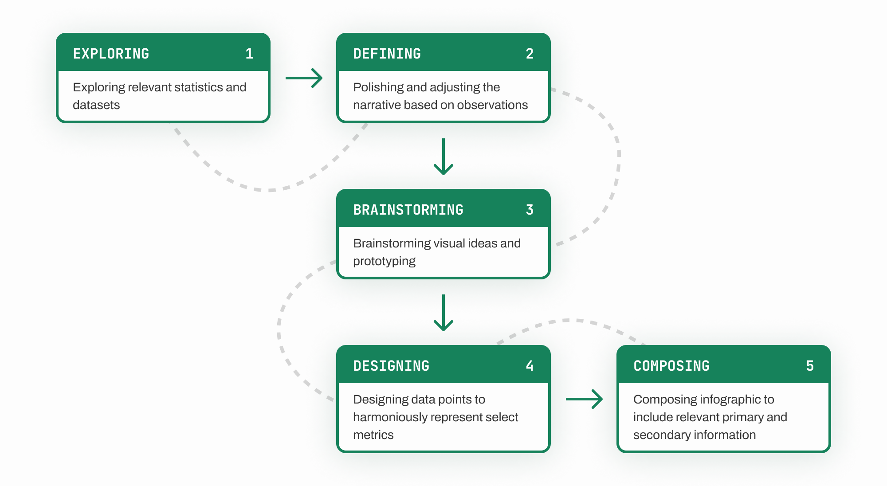

Infographic DEsign
Cost of Data Around the World
Living in Toronto, I couldn't help but notice the considerably higher internet charges compared to my home country, India. This stark contrast prompted me to ponder...
Is higher cost of mobile data common across other developed nations as well?
Retrospective view of the process
Design Decision
Single Axis Scatter Plot
The main aim was to highlight groups of countries with similar data costs and that is why I went with a scatter plot for this case. Since there were no other correlations to be highlighted, the plot was limited to a single axis to reinforce the main narrative.
Design Decision
Color Scheme
The variables chosen to define "developed" countries were:
Literacy rate - Orange was chosen since literacy rate is important in prediction of wealth adoption of technology.
Income levels - Green for its significance of wealth.
Access to internet - Blue was chosen to show proportion of population with access to internet.
Past reference - population and its proportion with access to internet in 2010 was conveyed through faded gray and blue colors.
Literacy rate - Orange was chosen since literacy rate is important in prediction of wealth adoption of technology.
Income levels - Green for its significance of wealth.
Access to internet - Blue was chosen to show proportion of population with access to internet.
Past reference - population and its proportion with access to internet in 2010 was conveyed through faded gray and blue colors.
Design Decision
Composition & Layout
A portrait layout was chosen to emphasize the extent of variance that outliers had in the distribution. The axis was kept vertical to support the "high cost" and "low cost" rhetoric.
Position of the title, legend, and observations also guide the viewer's glance from low cost to high cost.
Position of the title, legend, and observations also guide the viewer's glance from low cost to high cost.
Design Decision
Angled Data Points
To accommodate all data points and preserve the portrait layout of the infographic, the data points were angled about 60 degrees.
This orientation maintains readability of text in each data point, and aligns the miniature bar graphs in support of the intended gaze.
This orientation maintains readability of text in each data point, and aligns the miniature bar graphs in support of the intended gaze.
Learnings
A good data visualization crafts a clear narrative and communicates it using every visual effect at the designers disposal.
This visualization was inspired by emotive and expressive works of Georgia Lupi. I've grown a lot as a visual designer since this project and therefore led me to identify many possible improvements to this infographic specifically in typography and narrative.